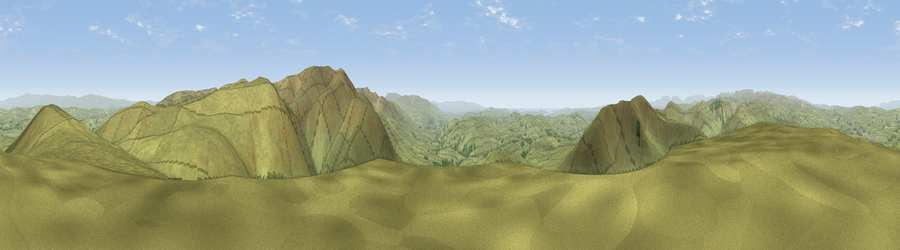

Blease Fell
#3485 in England · top 10% of its area beats it · near TebayThe view, rendered

A 360° render of this exact spot computed from the terrain model, tree cover and land cover — summer colours, afternoon light, calibrated against photographs of famous viewpoints. Real trees, hedges and buildings will differ in detail.
The panorama
Grey silhouette: terrain skyline in each direction (720 bearings, Earth curvature and refraction included). Dashed green: skyline with trees (+15 m) and buildings (+8 m) as obstacles. Blue strip: how far the ground is visible on each bearing.
Where the view opens
Wedge length = distance to the farthest visible ground on that bearing (vegetation-aware). Rings at 10, 25 and 50 km.
What fills the view
97% grassland · 2% woodland
Angular shares of the visible panorama (visual magnitude), not map area. Landscape diversity 0.06 (0–1 Shannon).
Key numbers
More beautiful places nearby
The staircase of upgrades: each row has a higher view potential than everything closer. Driving times are estimates from straight-line distance, calibrated against real road routing — check an actual route before setting out.
| Place | Direction | Drive | Score |
|---|---|---|---|
| Uldale Head | ESE · 2 km | ~5 min | 74.0 |
| Viewpoint near Grayrigg | WSW · 2 km | ~5 min | 74.6 |
| Grayrigg Forest | WSW · 3 km | ~6 min | 75.5 |
| Viewpoint c9961_7292 | SE · 3 km | ~8 min | 78.2 |
| Fell Head | SE · 3 km | ~8 min | 78.8 |
| Calders | SE · 6 km | ~13 min | 79.0 |
| Calf Top | SSE · 15 km | ~27 min | 79.8 |
| Crag Hill | SSE · 18 km | ~32 min | 80.0 |
54.39791, -2.58068 · source: dobih hill · position refined by local search. Computed location — check access rights before visiting.